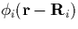
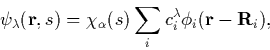
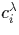
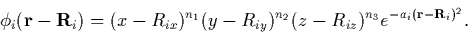
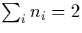
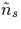

The wavefunctions are expanded using a basis of localised orbitals, , where
|  | (17) |
which converts the Kohn-Sham equations into matrix equations for . A set of Gaussian functions are used, multiplied by spherical functions to set the orbital quantum number:
|  | (18) |
The choice of n1, n2 and n3 in Eq. 3.1.2 sets the orbital type; n1=n2=n3=0 gives spherically symmetric s-orbitals, setting one of n1, n2 or n3 = 1 gives p-orbitals in the x, y or z direction respectively, whereas setting  produces a combination of five d- and one s- type orbital.
The charge density for a given spin state can then be described in terms of the density matrix, bij,s (the total charge density is simply the sum of the spin dependent charge densities):
Here, s gives the spin state and  is an occupied orbital.
Substituting this expression for n(r) back into
Equation 2.4.14 is only simple for the kinetic and
pseudopotential energy terms:
is an occupied orbital.
Substituting this expression for n(r) back into
Equation 2.4.14 is only simple for the kinetic and
pseudopotential energy terms:
However the Hartree energy requires O(N4) integral terms, and when N, the number of basis functions is large, this rapidly becomes unfeasible. Equally the exchange-correlation energy needs some sort of simplification. We therefore introduce an approximate charge density for each spin, , which allows analytic solution of these energies and the forces acting on each atom.